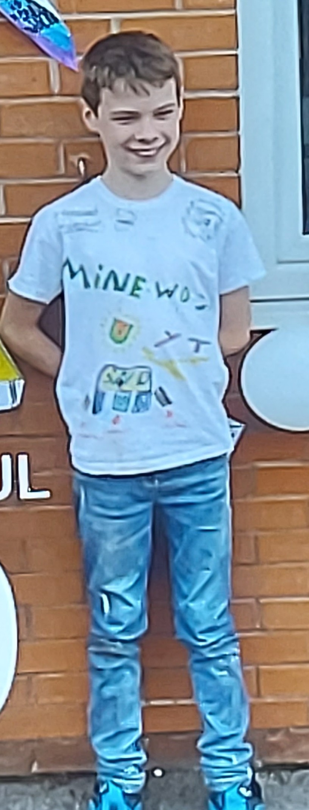

From Jackumentaries to Minewdjhu
Minewdjhu's content has always leaned on personality over polish — the same reactive, self-deprecating energy and a chat that gets treated like part of the cast, whatever game happens to be on that day. Here's how it started.
The first camera
Jack starts filming on an old camera under the name minewdjh, calling the videos Jackumentaries.
Minewdjhu is born
After losing his old Roblox account, Jack rebuilds under a new name — and this time it sticks. Each part of it means something:
MINE was Minecraft, Jack's favourite game at the time — he sank hours into a world called H&H, which he later revisited on stream. W was win, for a belief that everyone's good at their own thing. DJ was Jack's first dream job, before the channel took over. JH is simply his initials. And U was added at the end on his mum's suggestion.
"I remember when I was upset about losing my account and my mum helped me create another. She decided I could put U at the end of my name, which would stand for Ultimate." — Jack, on choosing the name
Spreading the word
Always determined to show off his channel in any way possible, Jack designed, wore, and sold custom merch — even proudly wearing it to his last day of primary school.

First video
Fortnite Gameplay: Episode 1 goes up during the first COVID lockdown, while Jack's in Year 6.
Back on stream
Jack returns with Hang Out & Chat, a fresh start after a hard few months, and decides to put the work in properly this time.
Twitch Affiliate
Jack becomes a paid Twitch affiliate partner — three months of consistent streaming, not a lucky break.